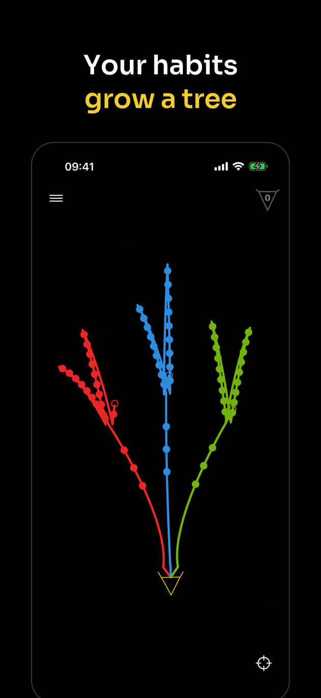
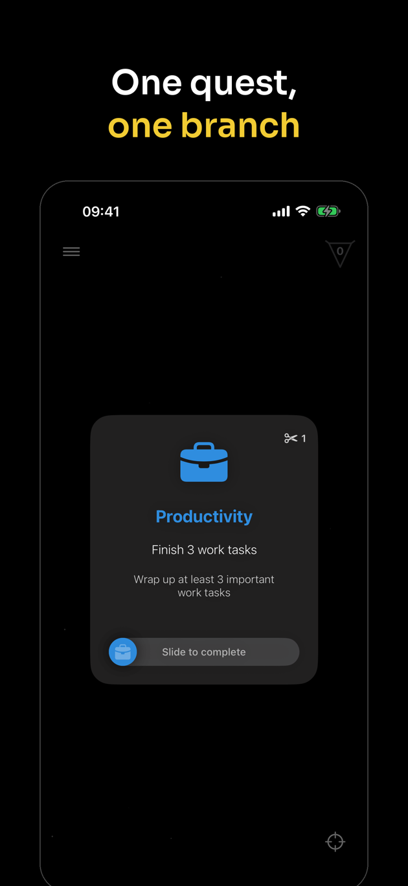
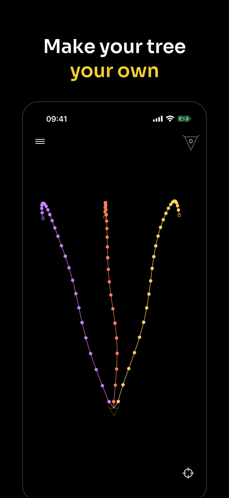
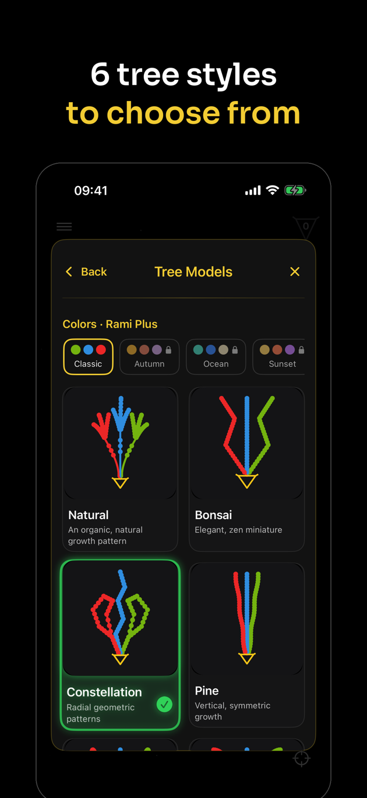
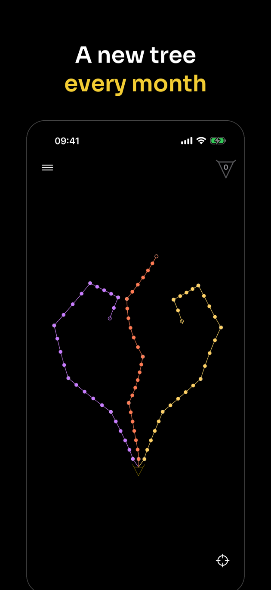

Your habits grow a tree
Complete quests every day and watch your tree grow through the month. A more balanced routine, without guilt or pressure.
Download on the App StoreFor iPhone
- Fun
- Health
- Productivity





How it works
Pick your quests
Three categories that grow together: Fun, Health and Productivity.
One branch per quest
Every completed quest adds a branch to your tree.
One tree per month
Finish the month's quests and, with an account, look back at past trees in your history.
At your own pace
A daily reminder at the time you choose. Works offline and, if you have an account, syncs when you're back online.
Free to start: use the full app with the Natural tree at no cost and without creating an account. Extra trees and the Rami Plus subscription are optional.
Support
Questions, problems or ideas? Write to corgosinhocorp@gmail.com. We reply in English and Portuguese.
Send an emailHow do I cancel or manage Rami Plus?
The subscription is billed by Apple. On your iPhone, open Settings, tap your name, then Subscriptions. Subscribers also find a “Manage subscription” button in the app's Store. Rami Plus renews automatically unless cancelled at least 24 hours before the end of the current period.
I bought a tree and it didn't show up
Open the app menu, go to Settings and tap “Restore Purchases”. The same option sits at the bottom of the Store. Use the same Apple Account the purchase was made with.
How do I request a refund?
Purchases are processed by Apple, and Apple decides on refunds. Request one at reportaproblem.apple.com.
Do I need to create an account?
No. You can use the app without an account: your progress stays only on your iPhone. To keep it in your account, tap “Sign in with Apple”, in the “Save your progress” prompt or in Settings. What you already did on the device is added to the account. Without an account, deleting the app deletes your progress; purchases and the subscription stay with your Apple Account and come back with “Restore Purchases”. Only prunes need an account, because their balance is kept on our servers.
How do I delete my account and data?
If you have an account, open the app menu, go to Settings and tap “Delete Account”. Deletion is permanent and removes your account and all your The Rami data: profile, trees, quests and history. It does not cancel your subscription: cancel it first in your iPhone's Settings. If you can't get into the app, request deletion by email. Without an account, the app does not send your progress or personal data to our servers: delete the app from your iPhone and the progress stored in it goes with it.
I'm not getting the daily reminder
Check that “Daily reminder” is on in the app's Settings and that notifications for The Rami are allowed in your iPhone's Settings.
Does the app work without internet?
Yes, once the app has downloaded the quests on first launch (that needs internet). If you have an account, your progress syncs when you're back online.
Privacy
Signing in with Apple is optional: you can use the app without an account. The app has no ads and no third-party tracking. Read the Privacy Policy and the Terms of Use.